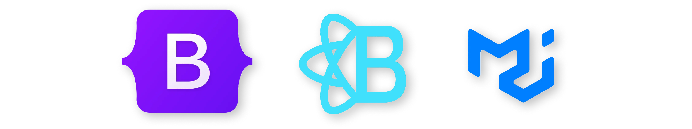

[MON] Technologies front-end
- MON
- 2022-2023
- temps 3
- JavaScript
- React
- MUI
- TailwindCSS
- Framework
- SASS
- Vue
- Parcel
- Redux
- Angular
- Svelte
- Bootstrap
- Webpack
- Next.JS
- Killian ROYANT
Ce MON présente différentes technologies front-end telles que les frameworks de développement web, les bibliothèques de composants, les outils CSS, la compilation de code et même le rendu côté serveur.
Ressources
- Frameworks
- Gestion des états
- Bibliothèques de composants
- Outils CSS
- Compilation du code
Prérequis
Avant de commencer cette formation, il est recommandé de maîtriser les bases du HTML, du CSS et du JavaScript. Les sujets suivants seront abordés dans cette formation, mais il est préférable d'avoir une compréhension de base de ces sujets :
- Les éléments HTML, les attributs et les balises
- Les styles CSS, les sélecteurs et les propriétés
- La manipulation du DOM en JavaScript
- Les fonctions en JavaScript, les tableaux et les objets
Si vous n'êtes pas familier avec ces concepts, nous vous recommandons de suivre une formation en ligne ou un tutoriel pour vous familiariser avec ces outils avant de poursuivre cette formation.
👋 Introduction
Bienvenue dans mon MON consacré aux technologies web pour le développement front-end. J'ai récemment entendu parler de nombreuses technologies pour le développement d'applications web, mais je ne les connaissais pas vraiment. J'ai donc décidé de faire des recherches approfondies et de partager mes découvertes avec vous.
![[MON] Technologies front-end](https://img.freepik.com/vecteurs-libre/site-web-programmation-petits-developpeurs-pour-illustration-vectorielle-plane-plate-forme-internet-programmeurs-dessins-animes-pres-ecran-code-ouvert-script-developpement-logiciels-concept-technologie-numerique_74855-10168.jpg?w=2000&t=st=1679498800~exp=1679499400~hmac=961bb260f50999d3dbb573df46737d73f946e0b28f70cdf224ce1f746816e00e)
Dans ce MON, nous allons explorer différentes technologies telles que les frameworks de développement web, les bibliothèques de composants, les outils CSS, la compilation de code et même le rendu côté serveur. Nous verrons comment chacune de ces technologies peut nous aider à créer des applications web plus efficacement et plus rapidement.
Je suis ravi de partager mes connaissances avec vous et j'espère que vous apprendrez autant que moi en explorant ces technologies passionnantes !
Sommaire
- Frameworks
- Gestion des états
- Bibliothèques de composants
- Outils CSS
- Compilation du code
🖼️ Frameworks
Le HTML/CSS/JS pur peut rapidement devenir complexe et difficile à maintenir dans des applications front-end de taille moyenne ou grande. La gestion de l'état de l'application peut vite devenir un casse-tête, surtout lorsque plusieurs composants doivent partager le même état. En outre, le HTML/CSS/JS pur ne permet pas de créer facilement des composants réutilisables, ce qui peut rendre le développement fastidieux et chronophage.
C'est pourquoi l'utilisation d'un framework, tel que React, Vue, Angular ou Svelte, peut s'avérer très utile pour le développement d'applications front-end. Les frameworks permettent de simplifier la gestion de l'état de l'application et facilitent la création de composants réutilisables. Ils permettent également de rendre l'interface utilisateur plus dynamique et interactive en permettant des mises à jour en temps réel. En utilisant un framework, les développeurs peuvent également bénéficier d'une communauté active qui fournit des bibliothèques et des outils pour faciliter le développement.
🫐 React
Ressources
React est un framework JavaScript open-source pour la création d'interfaces utilisateur. Il a été créé par Facebook et est aujourd'hui utilisé par de nombreux développeurs pour le développement d'applications front-end. React utilise un modèle de programmation appelé "composants" pour permettre la création d'interfaces utilisateur réutilisables et modulaires.
Un exemple d'utilisation de React est le code suivant :
import React, { useState } from 'react';
function Counter() {
const [count, setCount] = useState(0);
function handleClick() {
setCount(count + 1);
}
return (
<div>
<p>Vous avez cliqué {count} fois</p>
<button onClick={handleClick}>Cliquez ici pour incrémenter</button>
</div>
);
}
export default Counter;Dans cet exemple, nous utilisons la fonction useState pour déclarer une variable count qui sera utilisée pour compter le nombre de fois que l'utilisateur a cliqué sur un bouton. Nous utilisons également la fonction setCount pour mettre à jour la valeur de count lorsqu'un clic est détecté. Enfin, nous retournons un composant React qui affiche le nombre de clics et un bouton qui permet d'incrémenter le compteur.
🍐 Vue
Ressources
Vue, Angular et Svelte sont d'autres frameworks très populaires pour le développement d'applications front-end.
Vue est un framework JavaScript open-source pour la création d'interfaces utilisateur. Il s'inspire de React pour la création de composants réutilisables et modulaires, mais utilise un système de templates pour faciliter la création d'interfaces utilisateur. Vue est également connu pour sa facilité d'utilisation et sa flexibilité.
Voici le même exemple que pour React mais traduit en Vue :
<template>
<div>
<p>Vous avez cliqué fois</p>
<button @click="incrementer">Cliquez ici pour incrémenter</button>
</div>
</template>
<script>
export default {
data() {
return {
count: 0
};
},
methods: {
incrementer() {
this.count++;
}
}
};
</script>Dans cet exemple, nous utilisons la directive @click pour détecter les clics sur un bouton et appeler la méthode incrementer. Nous utilisons également l'interpolation `` pour afficher la valeur de la variable count dans le texte.
🍎 Angular
Ressources
Angular est un framework JavaScript open-source pour le développement d'applications web. Il est développé par Google et est utilisé dans de nombreuses applications Google. Angular utilise un système de templates pour créer des composants réutilisables et modulaires, mais il est également connu pour sa puissance et son extensibilité.
Voici l’exemple du compteur avec Angular :
<app-counter></app-counter>import { Component } from '@angular/core';
@Component({
selector: 'app-counter',
template: `
<div>
<p>Vous avez cliqué fois</p>
<button (click)="increment()">Cliquez ici pour incrémenter</button>
</div>
`,
})
export class CounterComponent {
count = 0;
increment() {
this.count++;
}
}
🍊 Svelte
Ressources
Svelte est un framework JavaScript open-source pour la création d'interfaces utilisateur. Il se distingue des autres frameworks en utilisant un processus de compilation pour générer du code optimisé et rapide. Svelte est également connu pour sa facilité d'utilisation et sa rapidité.
Et voici l’exemple du compteur avec Svelte :
<script>
let count = 0;
function handleClick() {
count += 1;
}
</script>
<div>
<p>Vous avez cliqué {count} fois</p>
<button on:click={handleClick}>Cliquez ici pour incrémenter</button>
</div>
🤔 Comparaison
Chacun de ces frameworks a ses avantages et ses inconvénients en fonction du contexte d'utilisation. Il est important de les comparer et de les évaluer avant de décider lequel utiliser pour un projet donné.
En comparaison avec React, Vue est souvent considéré comme plus facile à apprendre et à utiliser, tandis qu'Angular est considéré comme plus puissant et plus adapté aux grandes applications. Svelte, quant à lui, est considéré comme le plus rapide et le plus performant des frameworks.
📦 Gestion des états
Dans les frameworks comme React, la gestion des états peut rapidement devenir complexe, notamment lorsque plusieurs composants doivent partager le même état. C'est pourquoi des bibliothèques comme Redux ont été développées pour simplifier cette gestion.

🧰 Redux Toolkit pour gérer les états
Ressources
Redux est une bibliothèque JavaScript open-source de gestion d'états pour les applications JavaScript. Elle permet de stocker tous les états dans un seul objet, appelé "store", pour avoir une sorte de "base de données front-end". Cela permet de synchroniser l'interface utilisateur avec les données.
Redux utilise des reducers pour mettre à jour les états stockés dans le store. Les reducers sont des fonctions qui prennent en entrée l'état actuel et une action, qui est un objet décrivant l'événement qui a eu lieu. Ils renvoient un nouvel état, qui est ensuite stocké dans le store.
Redux Toolkit a été créé pour simplifier l'utilisation de Redux. Il est possible de l'installer avec la commande npm install @reduxjs/toolkit react-redux. Il simplifie l'écriture de reducers en utilisant la fonction createSlice, qui permet de déclarer les états initiaux et les actions sous forme d'objets. Il n'est plus nécessaire d'écrire des switch/case pour gérer les différents types d'actions.
Ci-dessous, un exemple d'utilisation du store de Redux avec Redux Toolkit :
import { createSlice } from "@reduxjs/toolkit";
const todoSlice = createSlice({
name: "todo",
initialState: [
{ id: 1, text: "Faire les courses", done: true }
],
reducers: { // Actions
addTask: (state, action) => { // Action : tâche + paramètres
// action = { type: "ADD_TASK", payload: "Aller faire les courses" }
const newTask = {
id: Date.now(),
done: false,
text: action.payload
}
state.push(newTask); // Plus de setState()
},
toggleTask: (state, action) => {
// action = { type: "TOOGLE_TASK", payload: 21 }
const task = state.find(t => t.id === action.payload);
task.done = !task.done;
},
deleteTask: (state, action) => {
// action = { type: "DELETE_TASK", payload: 21 }
state = state.filter(t => t.id !== action.payload);
}
})
Dans cet exemple, createSlice est utilisé pour déclarer l'état initial de la liste de tâches et les actions addTask, toggleTask et deleteTask. Ces actions sont appelées avec un objet action contenant un type et un payload qui décrit l'action à effectuer. Par exemple, pour ajouter une tâche, on appellerait addTask({ type: "ADD_TASK", payload: "Aller faire les courses" }). La fonction addTask ajouterait alors une nouvelle tâche à la liste stockée dans le store.
En résumé, Redux est une bibliothèque de gestion d'états pour les applications JavaScript qui permet de stocker tous les états dans un seul objet, appelé store. Les reducers sont utilisés pour mettre à jour les états stockés dans le store en réponse à des actions. Redux Toolkit simplifie l'utilisation de Redux en utilisant la fonction createSlice pour déclarer les états initiaux et les actions.
📚 Bibliothèques de composants
Les bibliothèques de composants telles que Bootstrap ou MUI sont des outils très utiles pour simplifier le développement d'interfaces utilisateur. Elles proposent des composants pré-conçus (boutons, formulaires, menus déroulants, etc.) qui peuvent être facilement intégrés dans une application. Les développeurs peuvent ainsi gagner du temps en évitant de réinventer la roue à chaque fois qu'ils ont besoin d'un composant standard.

En utilisant une bibliothèque de composants, les développeurs peuvent également s'assurer que leur application a une apparence cohérente et professionnelle. Les composants de la bibliothèque ont généralement un style prédéfini, ce qui permet de garantir une homogénéité de l'interface utilisateur.
🅱️ Bootstrap
Bootstrap est une bibliothèque de composants très populaire pour le développement d'applications front-end. Elle propose une grande variété de composants (boutons, formulaires, modales, etc.) ainsi que des outils pour faciliter la mise en page et la création de grilles.
Voici un exemple de code HTML utilisant Bootstrap :
<!DOCTYPE html>
<html lang="en">
<head>
<meta charset="UTF-8">
<meta name="viewport" content="width=device-width, initial-scale=1.0">
<title>Mon application Bootstrap</title>
<!-- Lien vers les fichiers CSS de Bootstrap -->
<link rel="stylesheet" href="<https://cdn.jsdelivr.net/npm/bootstrap@5.0.0/dist/css/bootstrap.min.css>" integrity="sha384-TZLXeZxep7Kx0zF+0Jyq3iaKu8v0Kj1+Z6X9c3Wm8LlA2QnRw6Kjy6Wp+x8BvIp" crossorigin="anonymous">
</head>
<body>
<div class="container">
<h1>Titre de ma page</h1>
<p>Voici un paragraphe de texte.</p>
<button class="btn btn-primary">Cliquez ici</button>
</div>
<!-- Lien vers les fichiers JavaScript de Bootstrap -->
<script src="<https://cdn.jsdelivr.net/npm/bootstrap@5.0.0/dist/js/bootstrap.min.js>" integrity="sha384-CiVjrwTtk1wLl7m3sW8zV7jK4P4M/7+2e1xjv7z4pIwH1kzBjg8rqcPzjGK0C5r5" crossorigin="anonymous"></script>
</body>
</html>
Dans cet exemple, nous avons inclus les fichiers CSS et JavaScript de Bootstrap à partir d'un CDN pour pouvoir utiliser les classes et les fonctionnalités de Bootstrap dans notre code HTML. Nous avons également utilisé la classe container pour centrer le contenu de la page dans un conteneur.
Ensuite, nous avons ajouté un titre et un paragraphe de texte à la page, puis un bouton avec la classe btn et la classe btn-primary pour lui donner une apparence de bouton de couleur bleue.
⚛️ React-Bootstrap
Ressources
Bootstrap peut également s’utiliser avec les différents frameworks. Il existe d’ailleurs une bibliothèque qui intègre directement les composants de Bootstrap dans React.
Voici un exemple de code pour utiliser un bouton de Bootstrap avec React-Bootstrap :
import React from 'react';
import { Button } from 'react-bootstrap';
function App() {
return (
<Button variant="primary">Cliquez ici</Button>
);
}
export default App;Dans cet exemple, nous importons le composant Button de la bibliothèque React-Bootstrap et nous l'utilisons dans le composant App en lui passant une prop variant avec la valeur primary.
🎁 MUI (composants React)
Ressources
MUI est une autre bibliothèque de composants populaire pour le développement d'applications front-end en React. Elle propose également une grande variété de composants (boutons, formulaires, modales, etc.) ainsi que des outils pour faciliter la création d'interfaces utilisateur.
Voici un exemple de code pour utiliser un bouton de MUI :
import React from 'react';
import Button from '@mui/material/Button';
function App() {
return (
<Button variant="contained">Cliquez ici</Button>
);
}
export default App;Dans cet exemple, nous importons le composant Button de la bibliothèque MUI et nous l'utilisons dans le composant App en lui passant une prop variant avec la valeur contained.
🤔 Comparaison
Bootstrap est connu pour sa grande variété de composants et son utilisation très répandue. Il a également une communauté très active qui fournit de nombreux thèmes et plugins pour étendre sa fonctionnalité. En revanche, il peut être difficile d'obtenir une apparence unique pour votre application, car il est si largement utilisé.
MUI, quant à lui, est une bibliothèque de composants plus moderne et plus légère que Bootstrap. Il est également plus facile à personnaliser grâce à son utilisation de thèmes et de variables CSS. Cependant, il a une courbe d'apprentissage plus élevée que Bootstrap et il est moins connu, ce qui peut rendre plus difficile la recherche de solutions aux problèmes.
D'autres bibliothèques de composants populaires pour le développement d'applications front-end en React comprennent Semantic UI, Ant Design et Material-UI. Semantic UI est connu pour sa syntaxe lisible, Ant Design pour sa facilité d'utilisation et Material-UI pour son utilisation de la conception matérielle de Google.
🎨 Outils CSS
Le CSS peut rapidement devenir fastidieux et limité dans sa fonctionnalité. Pour remédier à cela, il existe plusieurs alternatives qui peuvent améliorer la productivité des développeurs.
🌊 TailwindCSS
TailwindCSS est une bibliothèque CSS qui utilise des classes pré-définies pour faciliter la création de mises en page. Elle propose une multitude de classes pour les marges, les rembourrages, les couleurs, les typographies, etc. Plutôt que de définir des sélecteurs CSS personnalisés, les développeurs peuvent simplement utiliser les classes prédéfinies pour créer rapidement des mises en page cohérentes.
Pour utiliser Tailwind, il suffit d'ajouter les classes à un élément HTML en utilisant l'attribut class.
Par exemple, pour ajouter un bouton avec Tailwind, vous pouvez écrire :
<button class="bg-blue-500 hover:bg-blue-700 text-white font-bold py-2 px-4 rounded">
Cliquer ici
</button>Dans cet exemple, nous utilisons les classes bg-blue-500, hover:bg-blue-700, text-white, font-bold, py-2, px-4 et rounded pour définir l'apparence du bouton. Ces classes définissent la couleur de fond, la couleur de fond au survol, la couleur du texte, la police en gras, l'espacement vertical et horizontal et les bords arrondis.
Tailwind propose des centaines de classes prédéfinies pour définir les styles CSS courants, tels que les espacements, la typographie, les couleurs, les bordures, les ombres, etc. Les développeurs peuvent également personnaliser les classes en utilisant des fichiers de configuration ou en les remplaçant par des classes personnalisées.
Tailwind peut également être utilisé conjointement avec React ou d’autres bibliothèques comme Bootstrap et MUI. (J’en fais d’ailleurs une utilisation avec React et MUI dans ce POK)
Pour React, par exemple, suffit de placer les classes dans l’attribut className :
export default function Nav({ children }) {
return (
<nav className="py-4 px-6 text-sm font-medium">
<ul className="flex space-x-3">
{children}
</ul>
</nav>
)
}🎀 SASS (.scss)
Ressources
SCSS et SASS sont des préprocesseurs CSS qui étendent la fonctionnalité du CSS en ajoutant des variables, des fonctions, des boucles et d'autres fonctionnalités. Ils permettent de simplifier l'écriture de CSS en réutilisant des morceaux de code et en évitant les répétitions. Les développeurs peuvent également utiliser des fichiers SCSS/SASS pour créer des thèmes personnalisés qui peuvent être facilement appliqués à une application.
Voici un exemple de code SCSS :
@mixin button-base()
@include typography(button)
@include ripple-surface
@include ripple-radius-bounded
display: inline-flex
position: relative
height: $button-height
border: none
vertical-align: middle
&:hover
cursor: pointer
&:disabled
color: $mdc-button-disabled-ink-color
cursor: default
pointer-events: noneLe code SASS présenté utilise une mixin appelée "button-base" pour définir les propriétés de base d'un bouton. Cette mixin inclut d'autres mixins pour la typographie et les effets de ripple (ondulation) sur le bouton. Ensuite, elle définit le display à "inline-flex", la position à "relative", la hauteur à "$button-height" et supprime la bordure. Elle ajoute également un style de curseur "pointer" sur :hover et définit la couleur et le style de curseur pour :disabled.
🏭 Compilation du code
Les outils de compilation les plus couramment utilisés pour le développement front-end sont Parcel, Create React App et Webpack.
Parcel est un outil de compilation de code JavaScript sans configuration, Create React App est un outil de développement front-end pour React et Webpack est un outil de compilation de code JavaScript très puissant qui prend en charge une grande variété de fichiers. Chacun de ces outils a ses avantages et ses inconvénients en fonction du contexte d'utilisation.
📦 Parcel
Parcel est un outil de compilation de code JavaScript sans configuration. Il prend en charge les fichiers HTML, CSS, JavaScript, TypeScript, etc. et les compile automatiquement pour créer un bundle prêt à être déployé. Parcel utilise une approche de "zéro configuration", ce qui signifie qu'il n'est pas nécessaire de configurer quoi que ce soit pour commencer à l'utiliser.
⚛️ Create React App
Create React App est un outil de développement front-end pour React. Il permet de créer facilement des applications React prêtes à être déployées. Create React App utilise Webpack sous le capot pour compiler le code et créer un bundle. Il est également livré avec des outils pour tester et déployer facilement votre application.
🧰 Webpack
Webpack est un outil de compilation de code JavaScript très puissant qui prend en charge une grande variété de fichiers, y compris les fichiers CSS, les images, les polices, les fichiers JSON, etc. Il permet également de configurer des options avancées pour optimiser le bundle de votre application. Webpack est souvent utilisé avec React, Vue, Angular et d'autres frameworks JavaScript.
⏭️ Rendu côté serveur (Next.JS)
Le rendu côté serveur (SSR) est une technique permettant de générer le HTML côté serveur avant de l'envoyer au client. Cela peut améliorer les performances de l'application en réduisant le temps de chargement initial et en améliorant le référencement.
Next.js est un framework React open-source qui permet de créer des applications web avec un rendu côté serveur. Il a été créé par Vercel (anciennement Zeit) et est utilisé par de nombreuses entreprises pour le développement d'applications web.
Next.js utilise un système de pages pour permettre la création d'interfaces utilisateur. Chaque page est un fichier JavaScript qui exporte un composant React qui sera rendu sur le serveur ou le client en fonction de la demande. Il est également possible d'utiliser des fichiers d'API pour créer des points d'entrée pour les requêtes AJAX, et des fichiers de configuration pour personnaliser le comportement de Next.js.
Voici un exemple de fichier de page Next.js :
import { useRouter } from 'next/router';
function Post() {
const router = useRouter();
const { id } = router.query;
return (
<div>
<h1>Post {id}</h1>
<p>Ceci est un exemple de page Next.js avec un rendu côté serveur.</p>
</div>
);
}
export default Post;
Dans cet exemple, nous utilisons le hook useRouter de Next.js pour récupérer le paramètre id dans l'URL de la page. Nous utilisons ensuite cette valeur pour afficher un titre de page dynamique. Lorsque cette page est chargée, Next.js génère le HTML côté serveur et l'envoie au client pour affichage.
📚 Conclusion
J'espère que cette formation vous a été utile et que vous avez appris de nouvelles compétences pour améliorer vos projets de développement web. Les technologies web ont énormément évolué ces dernières années, offrant aux développeurs des outils toujours plus performants et efficaces pour la création d'applications front-end.
N'hésitez pas à explorer davantage ces outils et à continuer à vous former pour rester à jour dans le domaine du développement web.